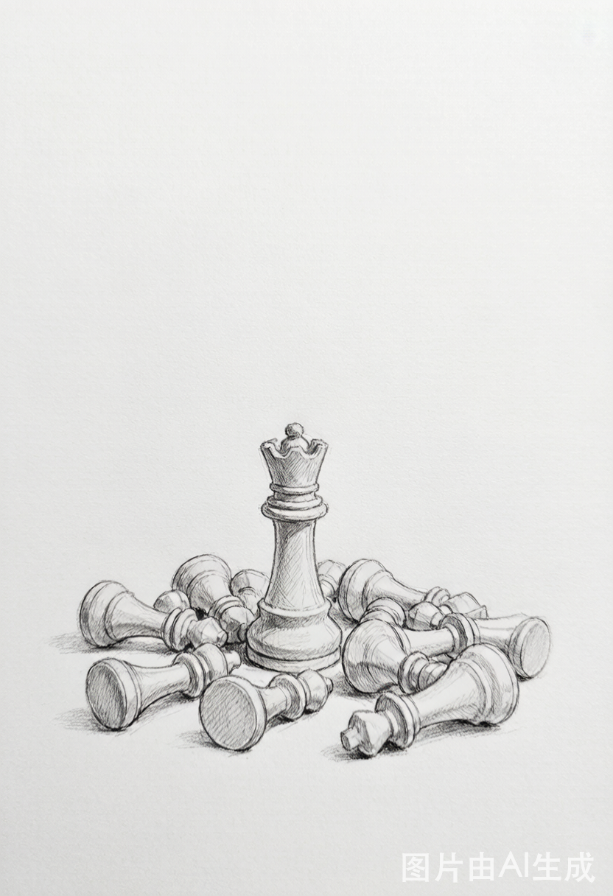
市场从来都是明白人挣糊涂人的钱……而不会赢钱的经济人，只是废人！
出自第1课开篇。缠师看着一群实业上很成功、进了股市却被“绞肉机”反复收割的朋友，点破一个残酷事实：市场里没有慈善家，只有赢家和输家，赢输是唯一标准。它把“炒股”从技巧问题拉回到最根本的立场——你要么成为那个明白人，要么成为被收割的糊涂人。
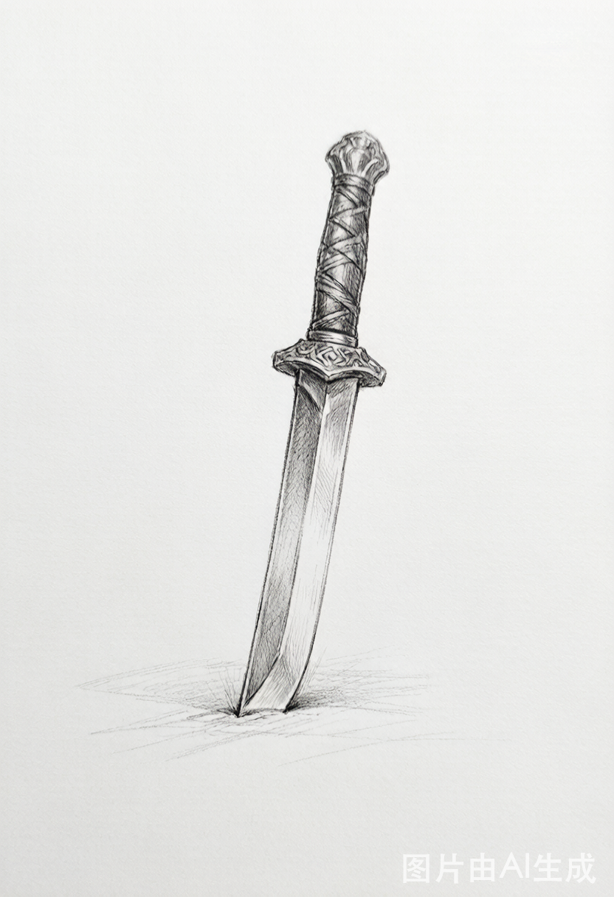
市场没有什么庄家，有的只是赢家和输家……关键你是否有屠龙刀！
第2课击碎散户最迷信的“庄家神话”。缠师说所谓庄家前赴后继、尸骨成山，市场本质是一场围猎游戏：有小弓箭就打野兔，有屠龙刀才配抓龙。与其膜拜或抱怨对手，不如先问自己手里有没有真本事。
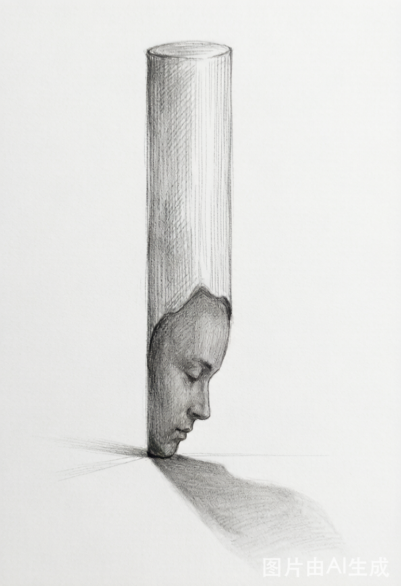
股票从来就不是股票，而是你的贪嗔痴疑慢……股票不过是一个幌子，一个道具。
第80课“市场没有同情、不信眼泪”的核心一句。你在盘面上的每一次追涨杀跌、患得患失，映出的都是自己的贪婪、嗔怒、痴迷、疑虑与傲慢。看懂这句，才明白操作真正的对手永远是自己。
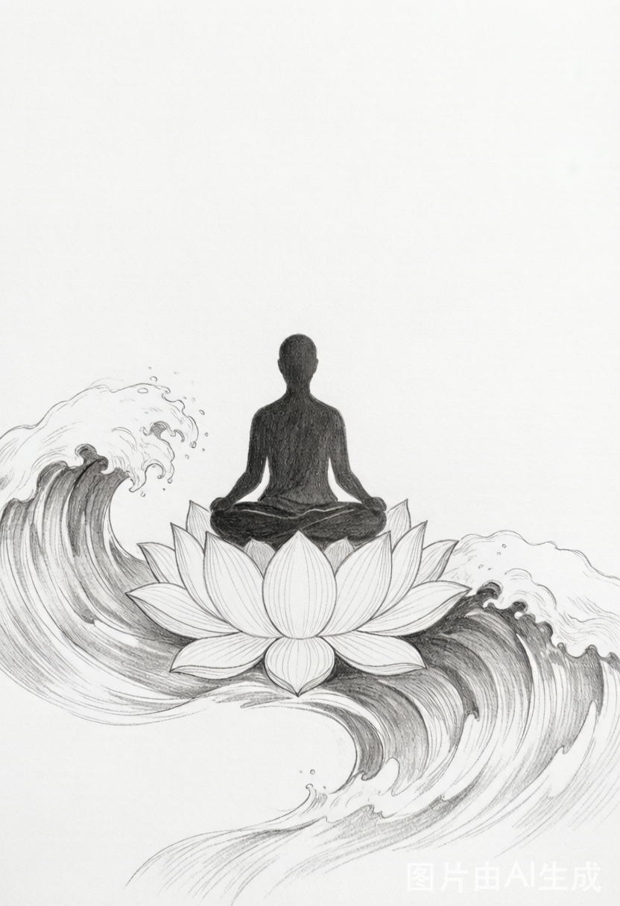
炒股票就是真正的学佛，不在这贪嗔痴疑慢的大烦恼中如鱼得水、得大自在，你那佛，顶屁用！
第52课把市场与修行彻底打通。缠师反对逃避红尘的“清高”，认为资本市场正是贪嗔痴疑慢最集中的“五浊恶世”；能在这最凶险处保持从容自在，才是真修行。避世不是道，入世炼心才是。
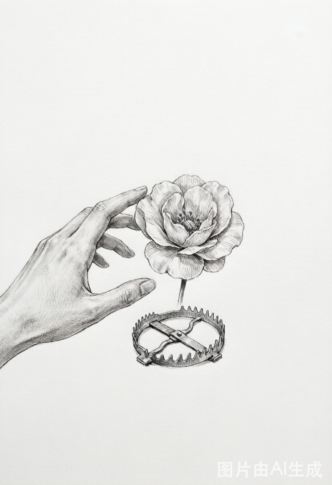
你的喜好，就是你的死亡陷阱！在市场中要生存，第一条就是……杜绝一切喜好。
第3课。市场的诱惑总是顺着你的偏爱设饵——你越喜欢一只股票，越容易在它身上栽跟头。能赢钱的才是好股票，任何与赢钱无关的“喜欢”，都是通向陷阱的诱饵。
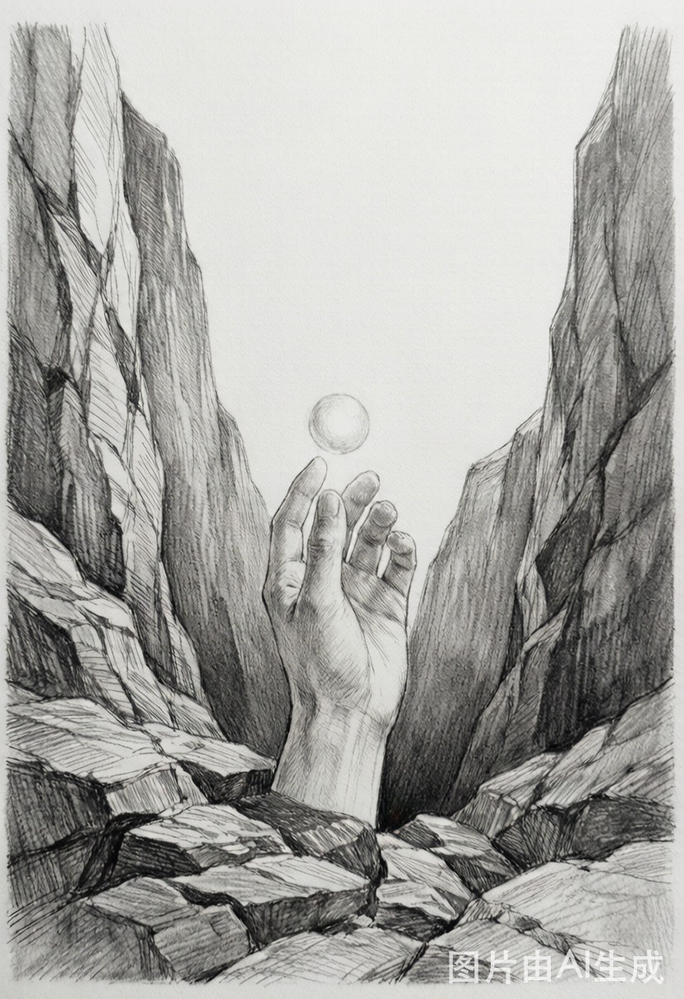
买点，总在下跌中形成，但恐惧阻止了你；卖点，总在上涨中，但贪婪阻止了你。
第41课“没有节奏，只有死”。缠师指出，阻止你倾听市场节奏的，正是贪婪与恐惧这一对天敌。买卖点天生逆人性，被情绪支配的人，在市场中唯一的命运就是：死。
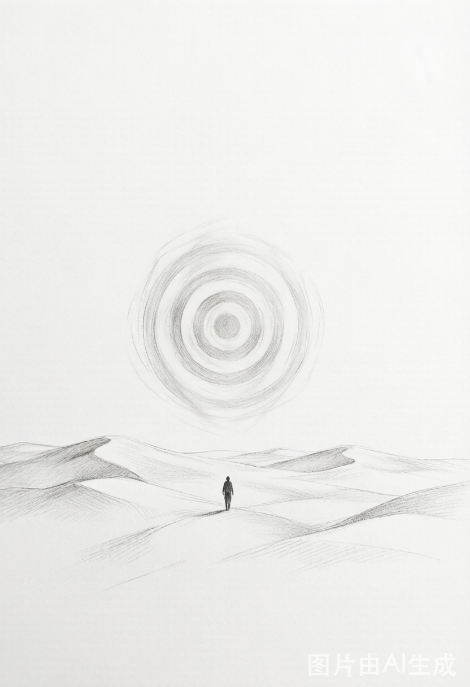
赌徒心理一个最大的特点，就是预设一个虚拟的目标……完全无视市场本身。
第96课“无处不在的赌徒心理”。“等反弹到某价位就出来”“再涨我就亏了”——这些看似谨慎的念头，本质都是拿想象中的目标去对赌真实的走势。真正的操作只跟随市场当下，而非心中的幻影。
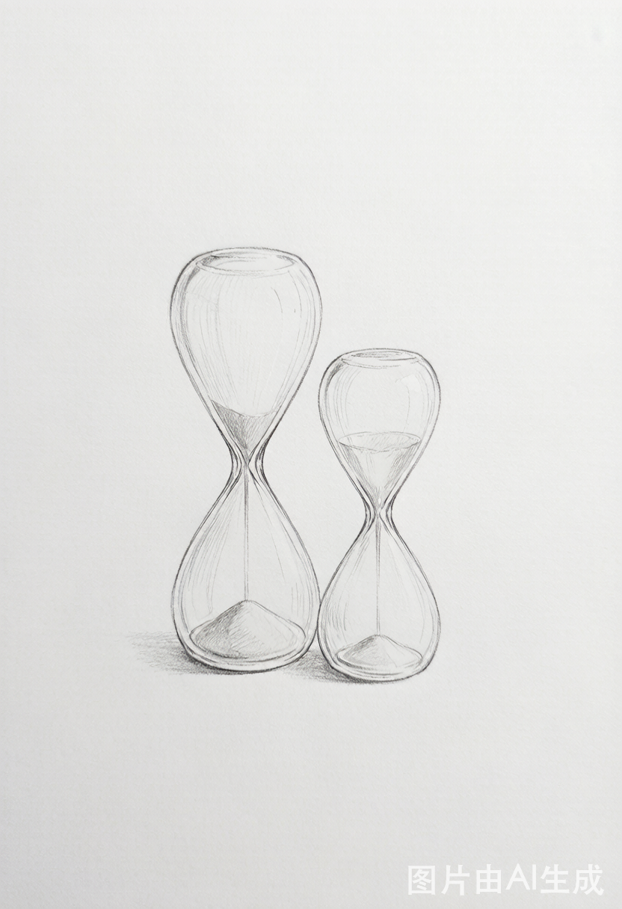
记住，1万亿与1万，变成0的速度是一样的，前者甚至可以更快。
同出第41课。缠师警示：资金体量从不构成安全垫，没有节奏、没有纪律，再大的本金也会归零，且往往败得更快——“大资金死起来更快，一夜之间土崩瓦解的事情，本ID见得多了”。
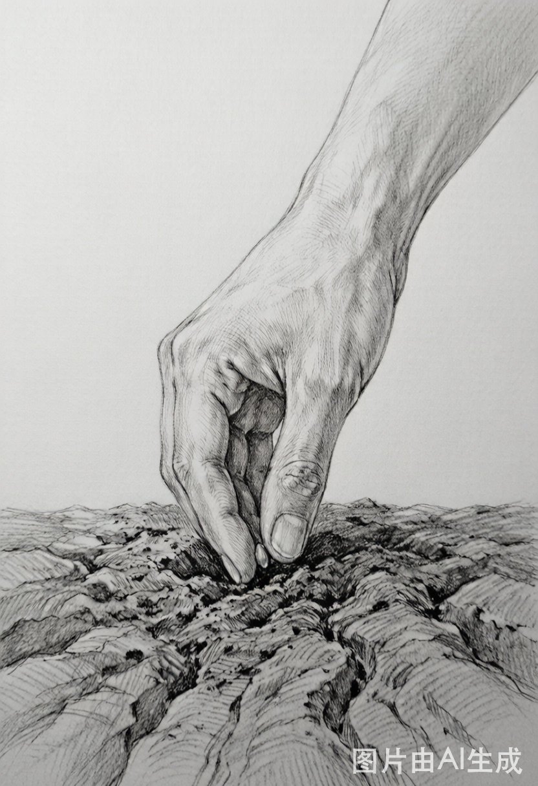
真正的理性从来都是当下的，从来都是实践的……理性是干出来的，今天，你干了吗？
第4课。缠师嘲讽那些满口“价值系统”“理性分析”却从不下场的人——理性不是YY出来的皇帝新衣，而是在当下真金白银的实践中干出来的。空谈的理性，不过是垂死的哀鸣。
相信你的眼睛，不要相信你的脑筋……这里无所谓分析，只是看和干！
第5课“市场无须分析，只要看和干”。缠师把交易者比作猎手：好猎手可以没有嘴巴，却一定有一双不被成见迷惑的眼睛。猎物是“看到”的，不是“想到”的；被脑筋支配的眼睛，只会看见诱饵。
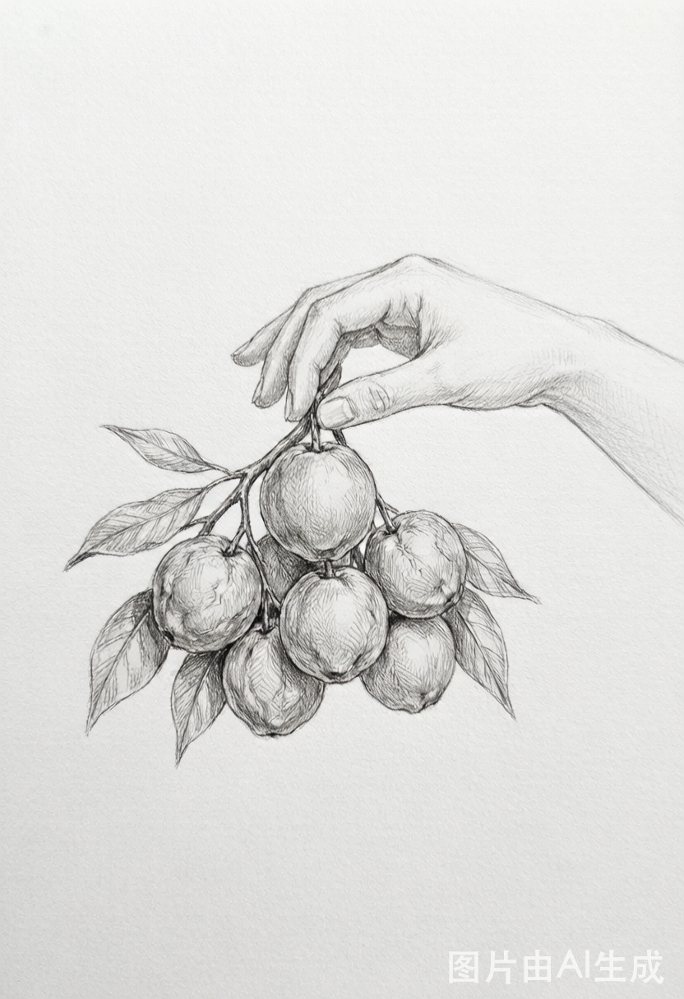
只搞能搞的，而不是只搞喜欢的。
第10课借孔子“众，好之，必察焉”引出的操作第一原则。“能搞”要靠冷静的“察”而得，“喜欢”只是情绪。把股票动态地分成“能搞的”与“不能搞的”，只在能搞的范围内出手，是一切纪律的起点。
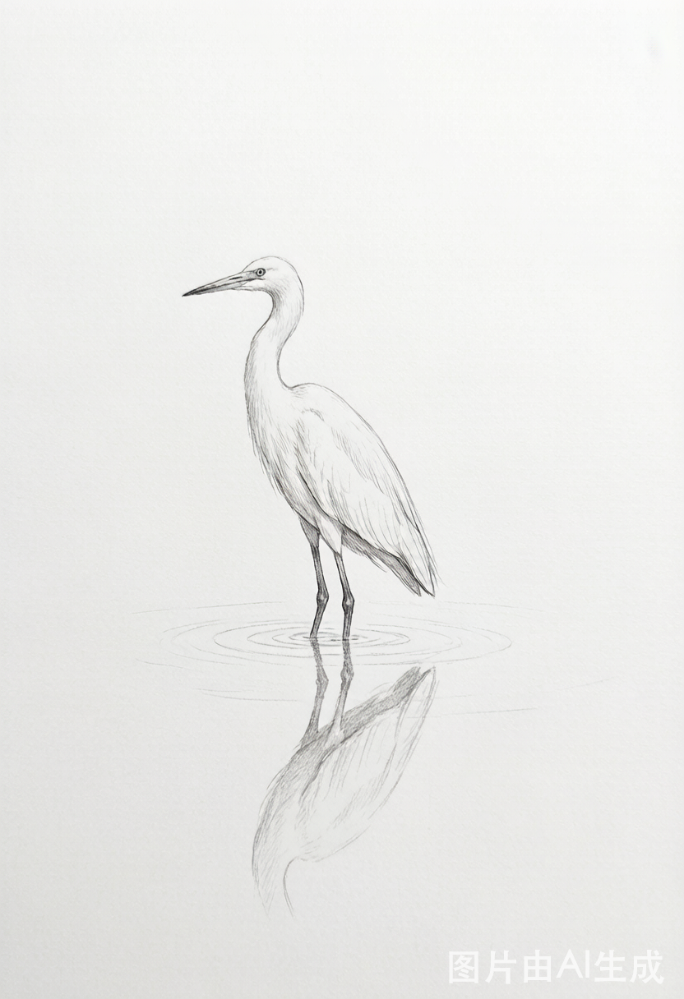
所有股票的操作，归根结底，只有两个字：等待。
第45课“持股与持币”。很多人以为买卖才是操作，缠师却说买卖一秒就完成，真正的操作是买卖之间漫长的持股与持币——都是等待，等待那个被理论绝对保证的买卖点，慢慢生长出来。
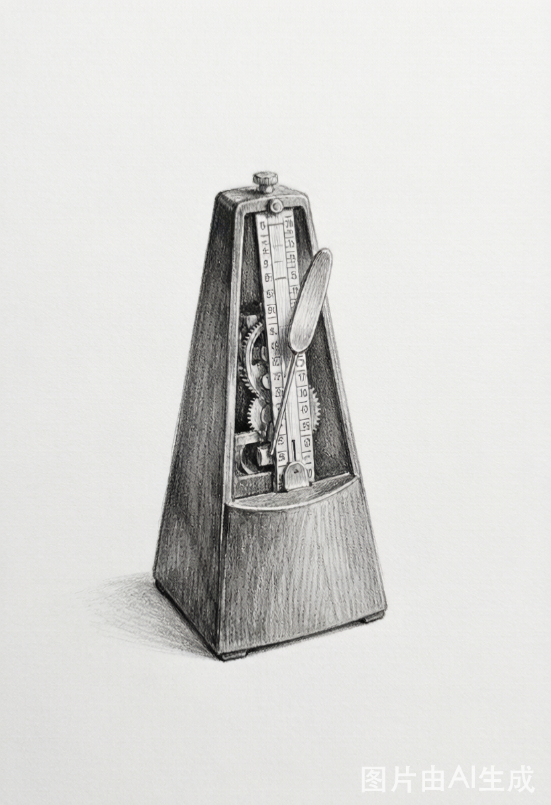
精度可以提高，但节奏不可能乱，节奏比精度更重要。
第41课。买卖点的判断精度，可以随着学习与实践慢慢提高；但“买点买、卖点卖”这个节奏，一刻都不能乱。哪怕是初学者，也必须先用节奏约束自己；错了就跟上节奏，而不是死扛忍受。
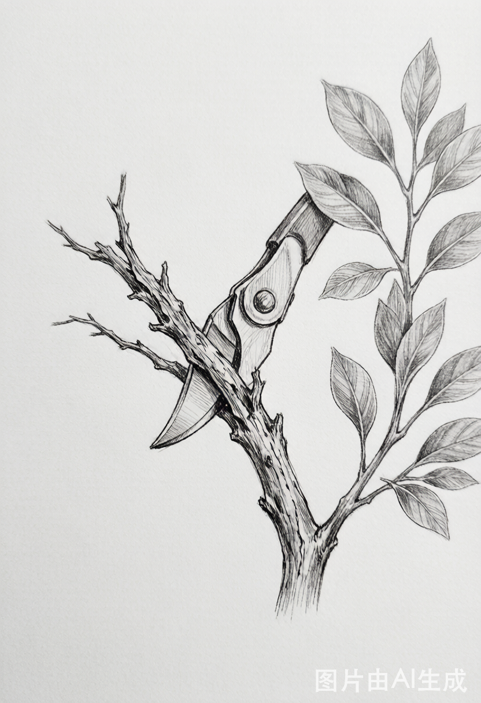
从来不存在真正的止蚀问题，只存在股票是否依然在能搞的范围内的问题。
第13课“不带套的操作不是好操作”。缠师反对按盈亏机械设止损——盈亏是被动的结果。唯一的退出理由，是走势由“能搞”变成“不能搞”，就像园丁只剪去枯死的枝，与它此刻是赚是亏无关。
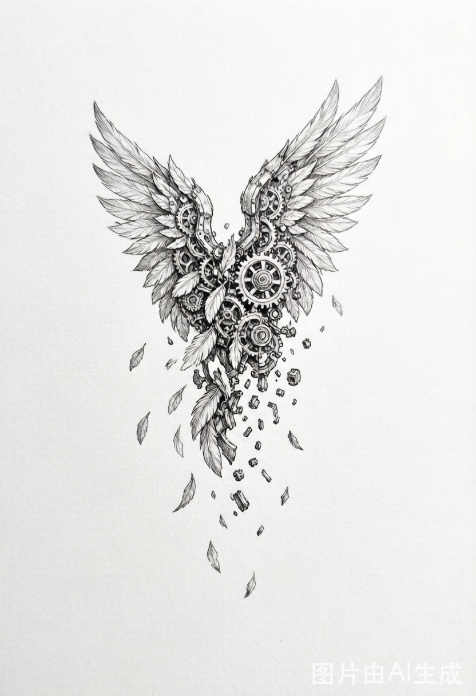
股市里死掉的，大半是聪明人，越聪明的，死得越快。要在市场上生存，就必须远离聪明。
第105课“远离聪明、机械操作”。缠师说市场如一头牛，唯有“目无全牛”、机械地合于关节的节奏，才能游刃有余。自作聪明地追求繁复、鄙视简单，恰恰是最快的死法——挣钱本是很简单的事。
修炼自己，市场中生存，别无他法。
第95课“修炼自己”的收束。缠师主张用一笔“绝对不影响生活的钱”、以十年为单位去磨练技术与心性，把本金拿回、让利润生长。市场真正比的是修养、人格与见识，别人，最多是你的陪练。